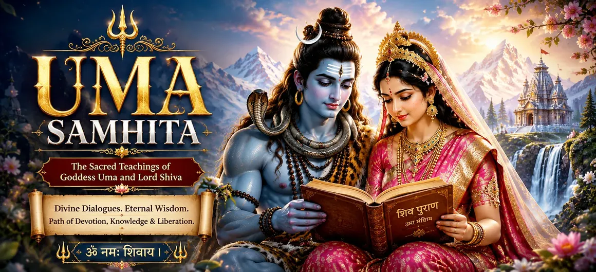

Welcome to Uma Samhita
Uma Samhita is the fifth sacred section of the Shiva Purana and contains 51 chapters in the chapter journey followed on Bholenath Dham. It begins with the glory of Uma and Maheshvara and opens into a wide spiritual landscape: the Supreme Truth, the mystery of Shiva and Shakti, cosmic creation, righteous conduct, devotion, sacred knowledge, self-control, meditation, yoga, worship, mantra, karma and the soul’s aspiration for liberation.
The later chapters turn toward creation, the lineages of Manus and kings, the sacred responsibilities owed to the Pitris, the birth of Vyasa and the powerful manifestations of the Divine Mother as Mahakalika, Mahalakshmi, Sarasvati, Uma, Shatakshi and Shakambhari. Uma Samhita therefore cannot be reduced to a single theme. It joins devotion with moral reflection, cosmic knowledge with human responsibility, and the worship of Shiva with reverence for Shakti.
Uma Samhita at a Glance
Fifth Samhita
A major section in the seven-Samhita arrangement of the Shiva Purana.
51 Chapters
A complete journey from Upamanyu’s teaching to the review of sacred rites.
Glory of Shiva
The opening chapters establish Maheshvara’s power, compassion and grace.
Karma and Dharma
Human choices are examined through responsibility, consequence and purification.
Cosmos and Creation
Sacred geography, worlds, planets, creation and dynastic lineages are described.
The Divine Mother
The concluding movement celebrates the protecting and nourishing forms of Shakti.
The Spiritual Scope of Uma Samhita
Uma Samhita speaks to the whole of spiritual life rather than presenting devotion as emotion alone. Its teachings ask the reader to unite reverence with knowledge, worship with ethical conduct and meditation with self-control. The stages of the journey gradually move from understanding the Divine to transforming the mind, speech and actions of the seeker.
The Samhita then expands beyond individual practice. Teachings on guru and disciple show how wisdom is transmitted; reflections on karma and liberation connect present conduct with the soul’s highest destiny; the sacred lineages and Pitri traditions honour continuity across generations; and the manifestations of the Divine Mother reveal spiritual power as protection, courage, wisdom, abundance and nourishment.
Five Sacred Movements of the Samhita
Shiva and Supreme Knowledge
Yoga, Mantra and Worship
Karma and Liberation
Gurus and Sacred Lineages
Pitris and Sacred Memory
Manifestations of Shakti
Chapters of Uma Samhita → Part 1
Begin with the glory of Uma and Maheshvara, then explore divine questions, the Supreme Truth, Shiva and Shakti, cosmic creation, righteous conduct, devotion, sacred knowledge and self-control.
Chapters of Uma Samhita → Part 2
Continue through meditation, yoga, Shiva Linga worship, daily devotion, sacred vows, mantra recitation, renunciation and the transforming relationship between guru and disciple.
Chapters of Uma Samhita → Part 3
These chapters explore karma, liberation, compassion, charity, truthfulness, the vision and grace of Shiva, divine wisdom, the unity of Shiva and Shakti and the highest state of spiritual freedom.
Chapters of Uma Samhita → Part 4
The sacred journey continues through Manu’s lineage, the Solar Dynasty, reverence for the ancestors, the redemption of the seven hunters and the birth and worship of Maharishi Vyasa.
Chapters of Uma Samhita → Part 5
The concluding chapters celebrate the protecting forms of the Divine Mother, her victory over destructive forces, the manifestations of Sarasvati and Uma, and the final review of sacred duties and blessings.
From Inner Discipline to Sacred History
The chapter sequence followed on Bholenath Dham begins with a concentrated path of spiritual instruction. The seeker is introduced to the glory of Uma and Maheshvara, the nature of the Supreme, the unity of Shiva and Shakti, disciplined conduct, meditation, mantra, renunciation, the guidance of the guru and the destruction of ignorance. These subjects form an inward journey: the mind is steadied, conduct is purified and knowledge is directed toward liberation.
The later movement places that inner discipline within sacred memory and divine history. The lineages of Manu and the Solar Dynasty show dharma carried through generations; teachings concerning the Pitris remind readers that life is received through relationships and inheritance; the chapters on Vyasa honour the preservation of sacred knowledge; and the manifestations of the Divine Mother reveal Shakti as wisdom, protection, courage and nourishment.
Living Teachings of Uma Samhita
Devotion with Understanding
Bhakti becomes deeper when prayer, knowledge and ethical conduct support one another.
Discipline of the Mind
Meditation, self-control and mantra turn scattered attention toward the Divine.
Responsibility for Action
The teaching of karma asks every seeker to examine intention, action and consequence.
Compassion and Charity
Spiritual progress must appear in generosity, truthful living and care for others.
Honouring Sacred Memory
Gratitude toward teachers and ancestors connects personal practice with a larger lineage.
Reverence for Shakti
Uma and the Divine Mother reveal power as wisdom, protection, nourishment and grace.
How to Read Uma Samhita Thoughtfully
Read in sequence whenever possible, because the landing page has been arranged as a gradual movement from metaphysical understanding to personal discipline, from discipline to grace, and from individual practice to sacred lineage and the Divine Mother. A single chapter may be read in one sitting, but reflection should continue after the reading has ended. Note the teaching that most directly challenges your present habits and ask how it may be expressed through conduct.
Some passages deal with demanding subjects such as bondage, ignorance, renunciation, death, conflict and the destruction of demonic forces. Read such narratives symbolically as well as devotionally. They invite reflection on pride, greed, fear, harmful desire and forgetfulness of the Divine. Their purpose is fulfilled when the reader becomes more truthful, compassionate, self-controlled and courageous—not when the reader merely completes another page.
Spiritual Reflection
Uma Samhita reminds us that liberation is not separate from the way we think, speak, worship, learn, give and remember. The path to Shiva is prepared through purified intention, disciplined action, compassionate service, reverence for wisdom and the recognition that consciousness and Shakti are eternally united.
Frequently Asked Questions
① What is Uma Samhita?
Uma Samhita is the fifth sacred section of the seven-Samhita Shiva Purana. The chapter journey presented here explores the glory of Uma and Maheshvara, spiritual discipline, karma, liberation, sacred lineages, ancestral wisdom and manifestations of the Divine Mother.
② How many chapters are included in this Uma Samhita directory?
This edition contains 51 chapters. They are divided into five balanced parts so readers can navigate the long Samhita comfortably on desktop and mobile devices.
③ What is the principal message of Uma Samhita?
Its central message is that devotion must mature into knowledge, discipline, truthful conduct and compassion. Shiva’s grace is not presented as an excuse to avoid responsibility, but as the Divine support that completes sincere spiritual effort.
④ Should beginners read the chapters in order?
Yes. Beginning with Chapter 1 provides a clear spiritual foundation. Sequential reading also makes it easier to see how teachings on knowledge, practice, karma, grace, lineage and Shakti support one another.
⑤ Is Uma Samhita only about Goddess Uma?
No. Uma is central to its spiritual identity, but the Samhita covers a much wider field that includes Shiva’s teachings, yoga, worship, karma, liberation, teachers and disciples, sacred history, the Pitris, Vyasa and several manifestations of the Divine Mother.
⑥ How can these ancient teachings help in daily life?
They encourage attention, self-control, honest speech, responsible action, compassion, gratitude and reverence for the Divine. Even one teaching becomes valuable when it changes the way a reader responds to family, work, difficulty and other living beings.
“When knowledge is joined with devotion, discipline with compassion, and Shiva with Shakti, the seeker begins to recognise the sacred unity present within all life.”
Begin Your Journey Through Uma Samhita
Begin with Chapter 1 and enter the sacred wisdom of Uma and Maheshvara. Read slowly, reflect deeply and allow each chapter to prepare the mind for the teaching that follows.